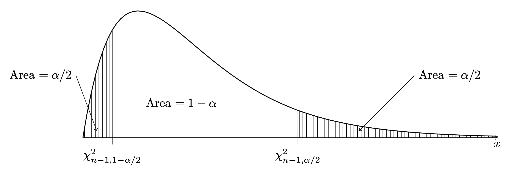

Suppose \(X_1,\dots,X_n\) are a random sample from the \(\mathcal{N}(\mu,\sigma^2)\) distribution, where \(\mu\) and \(\sigma^2\) are both unknown. Here we consider the sampling distribution of the sample variance \(S_n^2\) and how this can be used to construct a confidence interval for estimating the unknown population variance \(\sigma^2\)
We already have from Proposition 18.1 that \(\mathbb{E}S_n^2 = \sigma^2\), where this holds even when the population distribution is not a normal distribution. However, we have not learned complete details about the sampling distribution of \(S_n^2\). In the case that \(X_1,\dots,X_n\) are drawn from a normal distribution the sample variance \(S_n^2\), when scaled appropriately, has a distribution called a chi-squared distribution. We will introduce the chi-squared distributions and then present a result about the sampling distribution of \(S_n^2\).
Definition 25.1 (Chi-squared distributions) The chi-squared distribution with degrees of freedom \(k > 0\) is the distribution with probability density function (PDF) given by \[
f(x;k) = \left\{\begin{array}{ll}
\dfrac{1}{\Gamma(2/k)2^{k/2}}x^{k/2-1}e^{-x/2}, & x \geq 0\\
0, & x < 0,
\end{array}\right.
\] where \(\Gamma(a)=\int_0^\infty u^{a-1}e^{-u}du\) for \(a>0\) is the gamma function.
We will write \(X \sim \chi^2_k\) to express that \(X\) is a random variable having the chi-squared distribution with degrees of freedom \(k\). Figure 25.1 plots the PDFs of several chi-squared distributions. We see that these are right-skewed distributions giving positive probability only to positive numbers. Moreover, as the degrees of freedom parameter increases, the “center” of the distribution moves to the right.
Figure 25.1: PDFs of several chi-squared distributions
The following proposition explains how one can construct a random variable having a chi-squared distribution.
Proposition 25.1 (Chi-squared as a sum of squared independent normals) Let \(Z_1,\dots,Z_k \overset{\text{ind}}{\sim}\mathcal{N}(0,1)\). Then \[
Z_1^2 + \dots + Z_k^2 \sim \chi^2_k.
\]
Having introduced the chi-squared distributions, we now present a result characterizing the behavior of the sample variance \(S_n^2\) when the sample is drawn from a normal distribution.
Proposition 25.2 (Distribution of sample variance when population is normal) If \(X_1,\dots,X_n \overset{\text{ind}}{\sim}\mathcal{N}(\mu,\sigma^2)\) then \[
\frac{(n-1)S_n^2}{\sigma^2} \sim \chi^2_{n-1}.
\]
To see why the above might be so, note that in a few steps one can write \[
\frac{(n-1)S_n^2}{\sigma^2} =\sum_{i=1}^n\Big(\frac{X_i - \mu}{\sigma}\Big)^2 - \Big(\frac{\bar X_n - \mu}{\sigma / \sqrt{n}}\Big)^2,
\] where the sum on the right hand side is the sum of \(n\) standard normal random variables, each squared, and the second term is also a squared standard normal random variable. The above is not really sufficient to prove the result in Proposition 25.2, but it does make it appear plausible.
We now consider using the result from Proposition 25.2 to construct a \((1-\alpha)\times 100\%\) confidence interval for the variance \(\sigma^2\) based on \(X_1,\dots,X_n\overset{\text{ind}}{\sim}\mathcal{N}(\mu,\sigma^2)\). To do so, we first introduce the notation \(\chi^2_{n-1,1- \alpha/2}\) and \(\chi^2_{n-1,\alpha/2}\) for the values such that \(P(W < \chi^2_{n-1,1- \alpha/2}) = \alpha/2\) and \(P(W > \chi^2_{n-1,\alpha/2}) = \alpha/2\), where \(W \sim \chi_{n-1}^2\). These are depicted below:

Figure 25.2: Depiction of upper quantiles \(\chi^2_{n-1,1- \alpha/2}\) and \(\chi^2_{n-1,\alpha/2}\)
As with the notation \(z_{\alpha/2}\) depicted in Figure 24.1 we have used the notation of upper quantiles. That is, \(\chi^2_{n-1,\alpha/2}\) denotes the upper \(\alpha/2\) quantile and \(\chi^2_{n-1,1-\alpha/2}\) denotes the upper \(1-\alpha/2\) quantile of the \(\chi^2_{n-1}\) distribution.
Equipped with this notation, we may derive a confidence interval for \(\sigma^2\) in two steps:
If \(X_1,\dots,X_n\overset{\text{ind}}{\sim}\mathcal{N}(\mu,\sigma^2)\) then we have \[
P\Big( \chi_{n-1,1-\alpha/2}^2\leq \frac{(n-1)S_n^2}{\sigma^2}\leq \chi_{n-1,\alpha/2}^2\Big) = 1-\alpha/2.
\]
From here we obtain the endpoints of a \((1-\alpha)\times 100\%\) confidence interval for \(\sigma^2\):
Proposition 25.3 (Confidence interval for a normal variance) If \(X_1,\dots,X_n\overset{\text{ind}}{\sim}\mathcal{N}(\mu,\sigma^2)\) then for any \(\alpha \in (0,1)\) the interval \[
\Big[ \frac{(n-1)S_n^2}{\chi_{n-1,\alpha/2}^2}, \frac{(n-1)S_n^2}{\chi_{n-1,1 - \alpha/2}^2} \Big]
\] will contain \(\sigma^2\) with probability \(1-\alpha\).
Note that the interval is not symmetric around the estimator \(S_n^2\); that is, \(S_n^2\) does not lie at the midpoint of the interval, as it is not constructed by adding and subtracting a margin of error. This is because the sampling distribution of \(S_n^2\) is not symmetric around \(\sigma^2\).
Note that one can take the square roots of the endpoints of the interval given in Proposition 25.3 to obtain a confidence interval for the standard deviation \(\sigma\).
We can look up commonly used upper quantiles of chi-squared distributions in the chi-squared table provided in Chapter 40.
Exercise 25.1 (Confidence interval for the variance in golden ratio example) Refer to the golden ratio experiment in Example 15.2:
Regarding the values in the golden ratio data set as a random sample from a normal distribution with unknown mean \(\mu\) and unknown variance \(\sigma^2\), construct a confidence interval for \(\sigma^2\) (and also for \(\sigma\)) at the confidence levels below, using the fact that the sample standard deviation is \(S_n = 0.1481\).
We have \(\alpha = 0.10\) and \(n = 27\), so \(\chi_{27-1,0.10/2}^2 = 38.885\) and \(\chi_{27-1,1 - 0.10/2}^2 = 15.379\). The \(90\%\) confidence interval is therefore given by \[
\Big[\frac{(27-1)(0.1481)^2}{\chi_{27-1,0.05}^2}, \frac{(27-1)(0.1481)^2}{\chi_{27-1,0.95}^2} \Big] = [0.0147,0.0371].
\] The corresponding confidence interval for \(\sigma\) is \([0.1212,0.1926]\). ↩︎
With \(\alpha = 0.05\) and \(n = 27\) we have \(\chi_{27-1,0.05/2}^2 = 41.923\) and \(\chi_{27-1,1 - 0.05/2}^2 = 13.844\). The \(95\%\) confidence interval is therefore given by \[
\Big[\frac{(27-1)(0.1481)^2}{\chi_{27-1,0.05}^2}, \frac{(27-1)(0.1481)^2}{\chi_{27-1,0.95}^2} \Big] = [0.0136,0.0412].
\] The corresponding confidence interval for \(\sigma\) is \([0.116619,0.2030]\). ↩︎